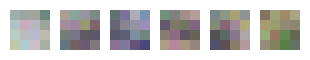
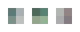
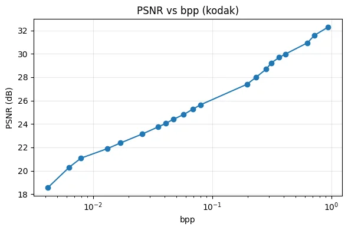

Inference using pre-trained model#
Full-Input Residual-Output Autoencoding with Projection Pursuit Encoders#
Progressive Multi-Scale Autoencoder#
Inference tutorial for the compressors.frappe module (patchify approach). Finer-scale latents are rearranged to the coarsest resolution via einops, then all patchified latents are concatenated and fed through a single unified decoder.
import torch, datasets, numpy as np, matplotlib.pyplot as plt, io, PIL.Image, pillow_jpls
from compressors.frappe.model import MergedAutoencoder, load_progressive_model, load_from_hub
from compressors.frappe.ops import get_scale_groups, adapt_to_decoder, decoder_channels_per_encoder
from compressors.frappe.quantize import srgb_to_linear, make_quantizer
from torchvision.transforms.v2.functional import pil_to_tensor, to_pil_image
device = 'cuda:0'
dataset = datasets.load_dataset("danjacobellis/kodak", split='validation')
Loading a checkpoint#
Progressive checkpoints store per-channel-count snapshots: merged_decoder_weights[n] contains encoder weights (per scale group), decoder weights, scale group structure, and patchify factors for a model using the first n+1 channels.
config, weights, n_trained = load_from_hub()
max_ps = max(config.ps[:n_trained])
print(f"Channels trained: {n_trained}")
print(f"Patch sizes: {config.ps[:n_trained]}")
print(f"Decoder ps: {config.decoder_ps}")
Channels trained: 21
Patch sizes: [32, 32, 32, 16, 16, 16, 16, 16, 16, 8, 8, 8, 4, 4, 4, 4, 4, 4, 2, 2, 2]
Decoder ps: 8
Encoder filters#
Each scale group has its own consolidated encoder. Display the learned filters per scale.
from compressors.frappe.visualize import make_filter_grid
import einops
merged = load_progressive_model(weights, config, n_trained, device)
# Compute per-scale std (the normalization range for display)
scale_stds = {}
for s, (ps_s, start, end) in enumerate(merged.scale_groups):
n_ch_g = end - start
filters = merged.encoders[s][0].weight.data.cpu()
biases = merged.encoders[s][0].bias.data.cpu()
grid = einops.rearrange(filters, '(H W) c h w -> H W c h w', H=1, W=n_ch_g)
bias_grid = einops.rearrange(biases, '(H W) -> H W 1 1 1', H=1, W=n_ch_g)
combined = grid + bias_grid / torch.prod(torch.tensor(filters.shape[-3:]))
scale_stds[ps_s] = combined.std().item()
scale = 10
for s, (ps_s, start, end) in enumerate(merged.scale_groups):
n_ch_g = end - start
filters = merged.encoders[s][0].weight.data.cpu()
biases = merged.encoders[s][0].bias.data.cpu()
grid = make_filter_grid(filters, biases, n_ch_g, layout=(1, n_ch_g))
w_px, h_px = grid.shape[2] * scale, grid.shape[1] * scale
img = to_pil_image(grid).resize((w_px, h_px), resample=PIL.Image.Resampling.NEAREST)
display(img)
# Display range: each scale normalized to ±4σ independently
print("Filter std per scale (display range = ±4σ):")
for ps_s in sorted(scale_stds.keys(), reverse=True):
print(f" p={ps_s:2d}: σ = {scale_stds[ps_s]:.4f}")




Filter std per scale (display range = ±4σ):
p=32: σ = 0.0117
p=16: σ = 0.0364
p= 8: σ = 0.0710
p= 4: σ = 0.2006
p= 2: σ = 0.3584
def prepare_image(img, max_ps):
"""Resize image to nearest multiple of max encoder patch size."""
w, h = img.size
h_rs = max_ps * (h // max_ps)
w_rs = max_ps * (w // max_ps)
return img.resize((w_rs, h_rs), PIL.Image.Resampling.BICUBIC)
def compute_bpp(latents_q, n_pixels):
"""Compress each scale separately with JPEG-LS and return bits per pixel."""
total_bytes = 0
for z in latents_q:
z_2d = z[0].reshape(z.shape[1] * z.shape[2], z.shape[3])
buff = io.BytesIO()
to_pil_image((z_2d.long() + 127).to(torch.uint8)).save(buff, format='JPEG-LS')
total_bytes += len(buff.getbuffer())
return total_bytes * 8 / n_pixels
Full encode-decode pipeline#
Encode at each scale’s native resolution, quantize to int8, compress each scale separately with JPEG-LS, then patchify all latents to coarsest resolution and decode through the unified decoder.
img = prepare_image(dataset[22]['image'], max_ps)
x = pil_to_tensor(img.convert("RGB")).to(torch.float).to(device).unsqueeze(0) / 127.5 - 1.0
x_in = srgb_to_linear(x) if getattr(config, 'linear_input', False) else x
n_pixels = x.shape[2] * x.shape[3]
# 1. Encode
with torch.inference_mode():
latents = merged.encode(x_in)
latents_q = [z.round().clamp(-127, 127).to(torch.int8) for z in latents]
# 2. Compression ratio
bpp = compute_bpp(latents_q, n_pixels)
print(f"bpp={bpp:.4f} CR={24/bpp:.2f}")
# 3. Display latents per scale
for z in latents_q:
z_2d = z[0].reshape(z.shape[1] * z.shape[2], z.shape[3])
display(to_pil_image((z_2d.long() + 127).to(torch.uint8)))
# 4. Decode
with torch.inference_mode():
xhat = merged.decode(latents_q).clamp(-1, 1)
x_01 = x / 2 + 0.5
xhat_01 = xhat / 2 + 0.5
# 5. PSNR
psnr = -10 * torch.nn.functional.mse_loss(x_01, xhat_01).log10().item()
print(f"PSNR={psnr:.2f} dB ({n_trained}ch)")
# 6. Display reconstruction
display(to_pil_image(xhat_01[0].cpu().clamp(0, 1)))
bpp=0.6563 CR=36.57
PSNR=35.19 dB (21ch)
Variable-rate: truncated channel reconstruction#
For variable-rate coding, transmit only the first n_ch channels. Each channel count has its own decoder snapshot.
from compressors.frappe.evaluate import validate
for n_ch in [1,2,3,6,12,15,21]:
partial = load_progressive_model(weights, config, n_ch, device)
with torch.inference_mode():
latents_pq = [z.round().clamp(-127, 127).to(torch.int8) for z in partial.encode(x_in)]
xhat_p = partial.decode(latents_pq).clamp(-1, 1)
bpp_p = compute_bpp(latents_pq, n_pixels)
psnr_p = -10 * torch.nn.functional.mse_loss(x_01, xhat_p / 2 + 0.5).log10().item()
print(f"CR={24/bpp_p:.2f} PSNR={psnr_p:.2f} dB ({n_ch}ch)")
display(to_pil_image((xhat_p[0] / 2 + 0.5).cpu().clamp(0, 1)))
rd_points = []
for n_ch in range(1, n_trained + 1):
model = load_progressive_model(weights, config, n_ch, device)
psnr, cr = validate(model, device, dataset, config)
rd_points.append((24.0 / cr, psnr))
del model
torch.cuda.empty_cache()
plt.figure(figsize=(6, 4))
plt.semilogx([p[0] for p in rd_points], [p[1] for p in rd_points], 'o-')
plt.xlabel('bpp')
plt.ylabel('PSNR (dB)')
plt.title('PSNR vs bpp (kodak)')
plt.grid(True, alpha=0.3)
plt.tight_layout()
plt.show()
print(f"\nKodak average ({n_trained}ch):")
for i, (bpp, psnr) in enumerate(rd_points):
print(f" [ch{i}] bpp={bpp:.4f} CR={24/bpp:.2f} PSNR={psnr:.2f} dB")
CR=5436.17 PSNR=17.04 dB (1ch)
CR=3490.08 PSNR=20.65 dB (2ch)
CR=2699.42 PSNR=22.93 dB (3ch)
CR=1024.89 PSNR=24.98 dB (6ch)
CR=403.71 PSNR=28.14 dB (12ch)
CR=116.16 PSNR=32.09 dB (15ch)
CR=36.57 PSNR=35.19 dB (21ch)

Kodak average (21ch):
[ch0] bpp=0.0042 CR=5767.27 PSNR=18.54 dB
[ch1] bpp=0.0063 CR=3802.25 PSNR=20.30 dB
[ch2] bpp=0.0079 CR=3030.24 PSNR=21.08 dB
[ch3] bpp=0.0132 CR=1817.76 PSNR=21.90 dB
[ch4] bpp=0.0170 CR=1412.33 PSNR=22.38 dB
[ch5] bpp=0.0257 CR=932.65 PSNR=23.13 dB
[ch6] bpp=0.0351 CR=684.73 PSNR=23.74 dB
[ch7] bpp=0.0408 CR=587.57 PSNR=24.05 dB
[ch8] bpp=0.0471 CR=509.37 PSNR=24.40 dB
[ch9] bpp=0.0577 CR=416.15 PSNR=24.81 dB
[ch10] bpp=0.0690 CR=347.68 PSNR=25.27 dB
[ch11] bpp=0.0800 CR=299.89 PSNR=25.64 dB
[ch12] bpp=0.1963 CR=122.27 PSNR=27.40 dB
[ch13] bpp=0.2327 CR=103.16 PSNR=27.98 dB
[ch14] bpp=0.2848 CR=84.28 PSNR=28.69 dB
[ch15] bpp=0.3140 CR=76.44 PSNR=29.22 dB
[ch16] bpp=0.3660 CR=65.57 PSNR=29.69 dB
[ch17] bpp=0.4119 CR=58.26 PSNR=29.98 dB
[ch18] bpp=0.6319 CR=37.98 PSNR=30.94 dB
[ch19] bpp=0.7216 CR=33.26 PSNR=31.57 dB
[ch20] bpp=0.9414 CR=25.50 PSNR=32.28 dB